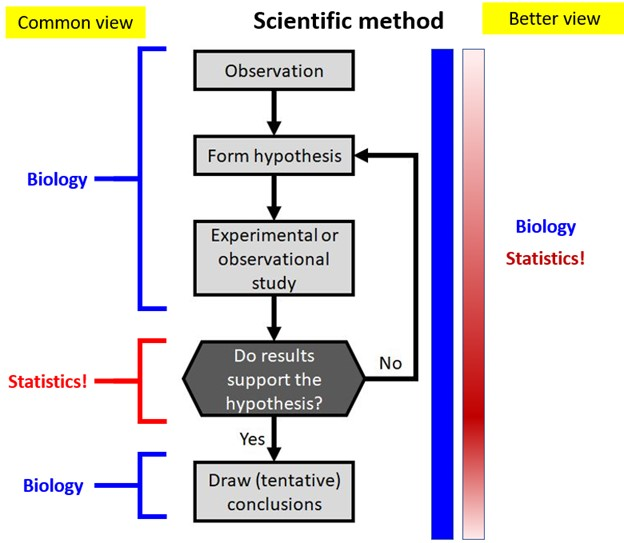
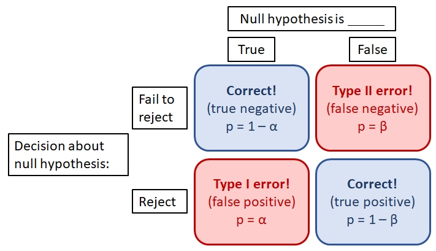
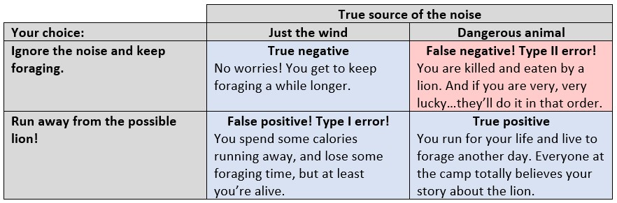
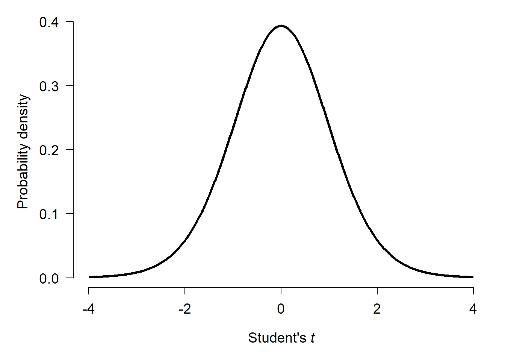
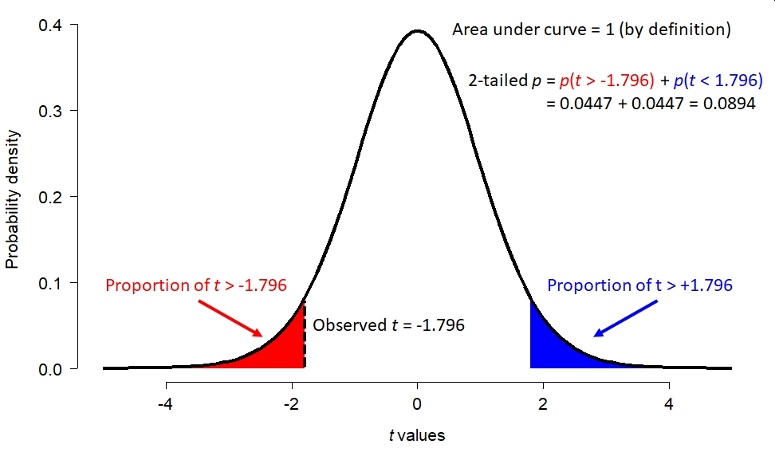

Science works by testing ideas to see if they line up with observations. In other words, checking the predictions of hypotheses against data. This process is called data analysis, because it involves careful examination of numerical patterns in observational or experimental data. The branch of mathematics concerned with analyzing data is called statistics. Statistics is vital to modern science in general, including biology.
This website and the course it supports is designed to introduce the ways that statistics are used in biology. This includes strategies for data analysis and an introduction to the open source program and language R. Specific tasks in the data analysis workflow (e.g., data manipulation) and specific analysis methods (e.g., generalized linear models) are covered in their own modules. This first module is a more general exploration of the role of statistics in modern biology, common statistical frameworks, and common misuses of statistics.
1.2 Statistics in modern biology
Biology, like all sciences, depends on the scientific method. This means testing proposed explanations, or hypotheses, against the data to see if the data support the hypothesis or not. That critical step, of deciding whether observations support or refute a hypothesis, is the domain of statistics: the branch of mathematics concerned with finding and interpreting patterns in data.
Many biologists traditionally think of “biology” and “data analysis” as two completely separate enterprises, with statistics being like a special wrench that a mechanic pulls out of the toolbox so infrequently that its use is unfamiliar. I think this is a mistake. As the figure below shows, every part of the scientific method can benefit from some knowledge of statistics. This includes experimental design, data collection, and interpreting the findings.
Statistics and thinking about data is part of the entire scientific process, not just a single stage.

So why do we, as biologists, need statistics? Some common answers might include:
“To tell us whether the patterns we see in our data are real”
“To tell whether the patterns in our data are due to chance or not.”
“To prove our hypotheses.”
All 3 of these are completely wrong. 1 is wrong because confirming reality requires observation and experiment, not calculating. 2 is a common misconception. Any pattern in data could be cause by chance. Statistics can help you estimate that probability, but cannot tell you for sure. Finally, 3 is wrong because that’s not how science works. Hypotheses can be supported or not supported. No amount of statistical analysis will ever completely rule out chance.
So the answer to the question, “Why do we as biologists need statistics?” is that we need a systematic way to determine whether data support hypotheses are not. Note that I said “systematic”, not “absolutely correct”. As we will see shortly, statistical tests are only a guide to decision-making. We should not fool ourselves into thinking that our analyses are completely objective. Many aspects of the analysis process are in fact subjective and thus any analysis has to be taken in its proper context, with caveats and biological reality always in mind.
When we “do statistics”, we are arguably not even answering biological questions. Every statistical test answers a particular form of question:
“Do groups A and B have the same mean?”
“As variable X changes, does variable Y tend to change?”
“If variable X increases by this much, how much does variable Y change?”
“If event G happens, how likely is it that event H also happens?”
Notice that these are “statistical” statements, not necessarily biological statements. Translating biological ideas and questions into statistical statements and questions is one of the hardest parts of “doing statistics”.
1.3 How do we use statistics in biology?
Although there are hundreds, if not thousands, of statistical tests out there, most biologists only ever need a handful. It turns out that statistical hypotheses in biology tend to fall into just a few categories:
Testing for a difference in mean or location between groups.
Testing for a continuous relationship between a response variable (or multiple variables) and one or more predictor variables. Also referred to as predicting or modeling a continuous variable.
Testing for (lack of) independence between categories of observations.
Trying to classify observations based on predictor variables.
These categories are not mutually exclusive, and many biological questions can be phrased in more than one way. Understanding what kind of pattern you looking for–that is, which of the 4 categories above your question falls into–can get you a long way toward understanding how to analyze your data.
1.4P-values and null hypotheses
1.4.1 Null and alternative hypotheses
When scientists design experiments, they are testing one or more hypotheses, or proposed explanations for a phenomenon. Contrary to popular belief, the statistical analysis of experimental results usually does not test a researcher’s hypotheses directly. Instead, statistical analysis of experimental results focuses on comparing experimental results to the results that might have occurred if there was no effect of the factor under investigation.
In other words, traditional statistics sets up the following:
Null hypothesis or\(H[0]\): default assumption that some effect (or quantity, or relationship, etc.) is zero and does not affect the experimental results.
Alternative hypothesis or\(H[a]\): assumption that the null hypothesis is false. Usually this is the researcher’s scientific hypothesis, or proposed explanation for a phenomenon.
In (slightly) more concrete terms, if researchers want to test the hypothesis that some factor X has an effect on measurement Y, then they set up an experiment comparing observations of Y across different values of X. They would then have the following set up:
Null hypothesis: Factor X does not affect Y.
Alternative hypothesis: Factor X does affect Y
Notice that in NHST the alternative hypothesis is the logical negation of the null hypothesis, not a statement about another variable (e.g., “Factor Z affects Y”). This is an easy mistake to make and one of the weaknesses of NHST: the word “hypothesis” in the phrase “null hypothesis” is not being used in the sense that scientists usually use it. This unfortunate choice of vocabulary is responsible for generations of confusion among researchers1.
In order to test an “alternative hypothesis”, what need is to estimate how likely the data would be if the null hypothesis were true. If a pattern seen in the data is highly unlikely, this is taken as evidence that the null hypothesis should be rejected in favor of the alternative hypothesis. This is not the same as “accepting” or “proving” the alternative hypothesis.
The null hypothesis is usually translated to a prediction like one of the following:
The mean of Y is the same for all levels of X.
The mean of Y does not differ between observations exposed to X and observations not exposed to X.
Outcome Y is equally likely to occur when X occurs as it is when X does not occur.
Rank order of Y values does not differ between levels of X.
All of these predictions have something in common: Y is independent of X. That’s what the null hypothesis means. To test the predictions of the null hypothesis, we need a way to calculate what the data might have looked like if the null hypothesis was correct. Once we calculate that, we can compare the data to those calculations to see how “unlikely” the actual data were. Data that are sufficiently unlikely under the assumption that the null hypothesis is correct—a “significant difference”—are a kind of evidence that the null hypothesis is false. If this sounds convoluted, that’s because it is.
This kind of analysis is referred to as Null Hypothesis Significance Testing (NHST) and is one of the most important paradigms in modern science. Whether or not this is a good thing is a subject of fierce debate among scientists, statisticians, and philosophers of science. For better or worse, NHST is all but the de facto standard of inference in scientific publishing, so regardless of its merits in your particular case you will need to be able to use it. The purpose of this course module is to encourage you to use it correctly.
The p-value allows us to make binary distinctions, in a systematic way, between situations where a null hypothesis is true and no pattern is present, and situations where the null hypothesis is highly unlikely to be true and thus a pattern might be present. Any binary decision process has four possible outcomes:
True positive: declare a pattern is present when it is present.
True negative: declare a pattern is absent, when it is absent.
False positive: declare a pattern is present, when it is actually absent. Also called a Type I error.
False negative: declare a pattern is absent, when it is actually present. Also called a Type II error.
These outcomes can be summarized as shown below. Statisticians are particularly concerned with the probabilities of false positives (\(\alpha\)) and false negatives (\(\beta\)). The false positive probability \(\alpha\) is the standard against which experimental p-values are compared. This is largely because we humans are inordinately prone to finding patterns even when no patterns are present–i.e., committing type I errors.
Relationship between the null hypothesis and our decision about experimental results. Type I and II errors result when we reject a true null hypothesis and when we fail to reject a false null. The false discovery rate, or Type I error rate, defined by \(\alpha\) is a very important value in our approach to science.

Why have we evolved this way? Finding patterns in noisy data has helped us discover virtually everything we know. So, pattern recognition must be a powerful cognitive tool. But there is another interpretation, that in our ancestral lifestyle life false positives were far less costly than false negatives. Imagine you are an Australopithecine or an early Homo erectus (or H. sapiens, for that matter), wandering through the savanna of what will someday be modern Ethiopia, looking for food. You hear a rustle in the tall grass a few meters ahead. Is that rustle just the wind? Or is it a dangerous animal that will kill and possibly eat you? Here are your choices and their consequences:
Illustration of the consequences of Type I and Type II errors, and why human minds may be so prone to Type I errors.

Notice that of your choices, only the type II error has immediate evolutionary consequences. In terms of fitness, the difference between a type II error and a true positive (death vs. survival) is much greater than the difference between a true negative and a false positive (a bit more food vs. a mild inconvenience).
What does this have to do with statistics in biology? Our human minds have evolved to find patterns in noisy data, and we are so good at it that we frequently “find” patterns that aren’t really there. So, we use the scientific method and statistical analysis as tools to help mitigate our bias toward pattern-finding.
1.4.2 Another way to frame null hypotheses
When I teach statistics to biology majors, I try to avoid the terms “null hypothesis” and “alternative hypothesis” because most of my students find them confusing. Instead, I ask students to ask two questions about a hypothesis:
What should we observe if the hypothesis is not true?
What should we observe if the hypothesis is true?
In order to be scientific hypothesis, both of those questions have to be answerable. Otherwise, we have no way of distinguishing between a situation where a hypothesis is supported, or a situation where it is not, because experimental results could always be due to random chance (even if the probability of that is very small). All we can really do is estimate how likely it is that random chance drove the outcome2.
1.4.3 History and status of p-values
The p-value is a statistical statement about the likelihood of observing a pattern in data when the null hypothesis is true. They were first developed in the 1700s, and popularized by the statistician R.A. Fisher in the 1920s. In Fisher’s formulation, the p-value was only meant as a “rule-of-thumb” or heuristic for determining whether the null hypothesis could be safely rejected. His original publications did not imply that rejecting the null hypothesis should automatically imply acceptance of the alternative hypothesis, or offer any justification for particular cut-offs or critical values of p. Those ideas came later.
Fisher suggested a critical p-value of 0.05 for convenience, but did not prescribe its use. In fact, he also suggested using other cut-offs, and even using the p-value itself as a measure of support for a hypothesis. The adoption of 0.05 as a threshold for significance proved popular, and has been taken as a kind of gospel for generations of researchers ever since.
In my opinion, the ubiquity of p-values on scientific research illustrates Goodhart’s Law: “When a measure becomes a target, it ceases to be a good measure”. Because the cut-off value of p < 0.05 is so widely used and accepted as a measure of the “truth” of a hypothesis, many researchers will take steps to ensure that their experiments produce p-values < 0.05. This can lead to the practices of p-hacking or data dredging. Or worse, setting up experiments to test meaningless null hypotheses or analyzing data selectively.
The attention and effort spent increasing the likelihood of a significant outcome is attention and effort that is not spent on formulating hypotheses, developing theory, or conducting experiments. Thus, intensive focus on p-values can be a real distraction from more important things.
These criticisms of p-values are neither new nor little known. Criticisms of the uncritical devotion to p-values can be found going back decades in the literature. In ecology, for example, debates about the place of NHST flare up occasionally, as new advances in statistical methods have offered opportunities for new inferential paradigms.
Recently, the American Statistical Association (ASA) published a number of papers criticizing the current use of p-values and offering alternatives. Wasserstein and Lazar (2016) provide a good starting point to the series and an overview of the major themes. Some of the proposed alternative or complementary methods have started to make their way into various scientific disciplines. Others have not. By and large, NHST remains the standard method of testing hypotheses with data and will likely remain so for a long time.
1.4.4 Where p-values come from
So where do p-values come from, anyway? Remember, p-values are an expression of how likely the observed data would be if the null hypothesis was true. Then calculation of a p-value involves assumptions about the size of the effect (i.e., difference between the results if the null is true vs. not true), the variability of the outcome (random or otherwise), and the distribution of different summary statistics of the results assuming that the null hypothesis is true. Let’s consider the example of a t-test. A t-test is used to compare means of two groups. We’ll talk more about them in Chapter 12 . We will use R to simulate some data and explore a basic t-test.
Welch Two Sample t-test
data: x1 and x2
t = -1.796, df = 17.872, p-value = 0.08941
alternative hypothesis: true difference in means is not equal to 0
95 percent confidence interval:
-5.2131465 0.4091686
sample estimates:
mean of x mean of y
6.223877 8.625866
The results show us that the means of groups x1 and x2 are not significantly different from each other (t = -1.796, 17.87 d.f., p = 0.0894). Because p\(\ge\) 0.05, we cannot reject the null hypothesis of no difference; i.e., the hypothesis that the means of x1 and x2 are the same. This is not the same as concluding that the means are the same. All we can say is that we cannot say the means are different.
But why? Where do the numbers in the output come from?
The t value is what’s called a test statistic. This is a summary of the quantity of interest–difference in means–that depends on the quantity of interest and additional terms that describe how that summary might vary randomly. In the case of the t-test, the test statistic t is calculated as:
\({\bar{x}}_1\) and \({\bar{x}}_2\) are the means of two sets of values \(x_1\) and \(x_2\). A bar over a variable usually denotes a sample mean.
\(s_1^2\) and \(s_2^2\) are the sample variances of \(x_1\) and \(x_2\). The variance is a measure of how spread out values are away from the mean.
\(n_1\) and \(n_2\) are the number of observations in \(x_1\) and \(x_2\).
The numerator is the quantity we are interested in: the difference between the means in group 1 and group 2. The denominator scales the difference according to the sample size and the amount of variation in both groups. Thus, t accounts for the quantity of interest (the pattern), the variability in the pattern, and the number of observations of the pattern.
In the example above, the t statistic was -1.796. This was the difference in means (-2.402) scaled by the amount of random variation (\(s_1^2\) and \(s_2^2\)) relative to the number of observations (\(n_1\) and \(n_2\)). The “significance” of the test comes from the fact that t-statistics themselves follow a pattern called the Student’s t distribution. The Student’s t distribution describes how likely different values of t are given a certain sample size. This sample size used is not the total number of observations, but instead a scaled version of sample size called degrees of freedom (d.f.). For the example above with 17.872 d.f., the t distribution looks like this:

If there was no difference between the means of x1 and x2, then t statistics of randomly generated datasets should cluster around 0 with more extreme values being much less likely. Test statistics \(\ge\) 4 or \(\le\) -4 almost never happen.
What about our t statistic, -1.796? The figure below shows how the total possible space of t statistics (given 17.872 d.f.) is partitioned. The total area under this curve, called a “probability density plot”, is equals 1. If you think about it, t must take on a value…so the sum of probabilities for all t is 1. The red area shows the probability of a t occurring randomly that is \(< -1.796\). That is, more extreme than the observed t. But “more extreme” can work the other way too: t could randomly be \(> 1.796\) as well. This probability of this possibility is shown by the blue area. The total of the red and blue areas is the total probability of a t value more extreme than the observed t.
The areas under the t distribution probability density curve outside the critical values of t define the two-tailed p-value for the test.

But as we shall see, increasing the sample size can make the same difference appear significant:
Welch Two Sample t-test
data: x1 and x2
t = -15.485, df = 1997.4, p-value < 2.2e-16
alternative hypothesis: true difference in means is not equal to 0
95 percent confidence interval:
-2.342319 -1.815705
sample estimates:
mean of x mean of y
6.048384 8.127396
We can also find a significant p-value by reducing the amount of variation (sigma, or \(\sigma\)). In this example, variance within each group is expressed as the residual standard deviation (SD). Residual variation is variation not explained by the model (i.e., not related to the difference in means between groups). The SD is the square root of the variance, and is how R expresses the variation in a normal distribution (rnorm()).
Welch Two Sample t-test
data: x1 and x2
t = -4486.7, df = 17.872, p-value < 2.2e-16
alternative hypothesis: true difference in means is not equal to 0
95 percent confidence interval:
-2.001071 -1.999197
sample estimates:
mean of x mean of y
6.000075 8.000209
So, what the P-value in our t-test tells us depends on not just the actual difference, but how variable that difference is and how many times we measure it.
The table below summarizes the results of the three simulations we just ran:
True difference (\({\bar{x}}_1-{\bar{x}}_2\))
Residual SD
Sample size
p-value
Significant?
-2
3
20
0.089
No
-2
3
2000
\(<0.001\)
Yes
-2
0.001
20
\(<0.001\)
Yes
1.4.5 What p-values mean and do not mean
In the simulations above, we know that the true difference was -2 because that is how we generated the numbers. But the conclusion of the experiments depended on experimental parameters other than the one of interest! For each of the three scenarios above, consider these questions:
Should the researchers reject the null hypothesis, and conclude that there is a difference between x1 and x2?
Should the researchers accept the null hypothesis, and conclude that there is no difference between x1 and x2?
Should the researchers accept the alternative hypothesis, and conclude that there is a difference between x1 and x2?
The researchers should reject the null hypothesis only in scenarios 2 and 3. In scenario 1, they should not “accept” the null hypothesis. The correct action is fail to reject the null. Accepting the null hypothesis would imply some certainty that the difference was 0. But that is not what the t-test actually says. What the t-test really says is that a difference (measured as t) between -1.796 and 1.796 is likely to occur about 91% (i.e., 1-P) of the time even if the true difference is 0. In other words, if we repeated the experiment, we would get a \(|t|>1.796\) over 9 times out of 10!
One of the most common misconceptions about p-values is that they represent the probability of the null hypothesis being true, or of the alternative hypothesis being false. Neither of these interpretations is correct. Similarly, many people think that 1 minus the p-value represents the probability that the alternative hypothesis is true. This is also incorrect.
Remember:
The p-value is only a statistical summary, and says nothing about whether or not a hypothesis is true.
The p-value is only a statement about how unlikely the result would be if there was no real effect.
A p-value is a purely statistical calculation and says nothing about biological importance or the truth of your hypothesis.
Interpreting p-values and other statistical outputs is the job of the scientist, not the computer.
If it feels like I’m belaboring these points, it’s because I am. The p-value and NHST in general are merely a set of heuristics to help researchers make binary distinctions like:
Reject or fail to reject the null hypothesis.
True difference is 0 or not 0.
Difference is \(\ge3\)or not \(<3\).
And so on.
These distinctions are binary because each condition is the logical negation of the other. But, rejecting one side of each dichotomy is not the same as accepting the other. By analogy, juries in criminal trials in the USA make one of two determinations: guilty or not guilty. A verdict of not guilty includes innocent as a possibility, but does not necessarily mean that the jury thinks the defendant is innocent. It simply means that the jury does not feel that the defendant has been proven guilty.
Likewise, the p-value might help distinguish “difference in means is different from 0 (\(p<0.05\))” vs. “difference in means is not different from 0 (\(p\ge0.05\))”. The latter choice includes a difference in means of 0 as a possibility, but does not actually demonstrate that the value is 0.
1.4.6 Do you need a p-value?
Now that we have a better handle on what a p-value really is, you might be tempted to ask, “Do I need a p-value?” Yes, you probably do. For better or for worse, p-values and NHST are firmly entrenched in most areas of science, including biology. Despite its shortcomings, the NHST paradigm does offer a powerful way to test and reject proposed explanations. This utility means that NHST and p-values are not going away any time soon. If you want an alternative to p-values and NHST, refer to Chapter 26 or Chapter 27.